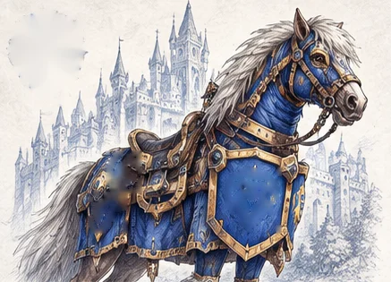
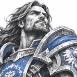
Humain : chevaux
Katie Hunter · Forêt d'Elwynn, ferme de l'Est 84.2, 65.5
- Bride d'étalon noir
- Bride de pinto
- Bride de jument alezane
- Bride de cheval bai
- Palefroi bai rapide
- Palefroi blanc rapide
Où acheter ta première monture, quelles bêtes chaque race propose, et comment obtenir les montures de classe, de réputation, de JcJ et de donjon. Tous les noms sont ceux du jeu en français.
📅 Mise à jour le 3 novembre 2026🛠 Patch 1.60.1.70753
| Monte | Niveau | Vitesse | Prix (bêta) |
|---|---|---|---|
| Apprenti cavalier | 40 | +60 % | 100 po |
| Compagnon cavalier | 60 | +100 % | 1 000 po |


Katie Hunter · Forêt d'Elwynn, ferme de l'Est 84.2, 65.5
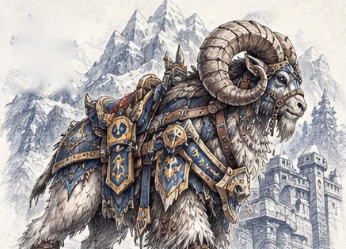
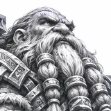
Veron Amberstill · Dun Morogh, ranch d'Amberstill 63.5, 50.6
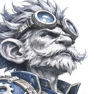
Milli Featherwhistle · Dun Morogh, dépôt de Steelgrill 49.1, 48.0
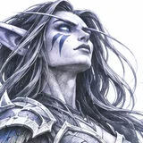
Lelanai · Darnassus, terrasse des Guerriers 38.3, 15.3
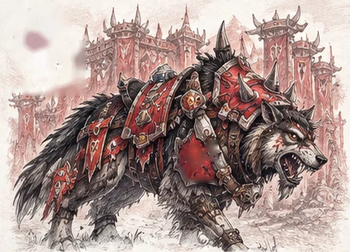
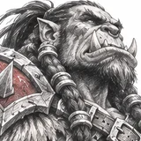
Ogunaro Wolfrunner · Orgrimmar, vallée de l'Honneur 69.4, 12.2
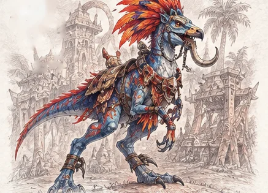
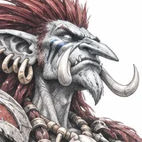
Zjolnir · Durotar, village de Sen'jin 55.2, 75.7
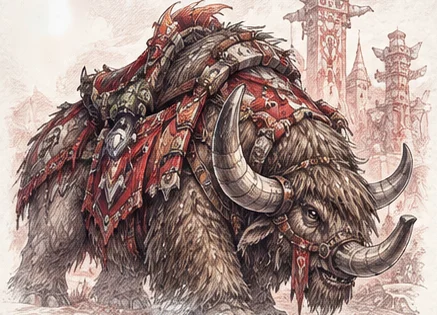
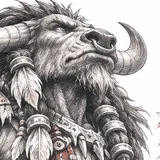
Harb Clawhoof · Mulgore, village de Sabot-de-Sang 47.5, 58.5
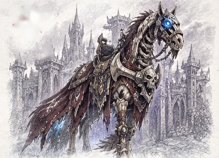
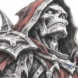
Zachariah Post · Clairières de Tirisfal, Brill 61, 52
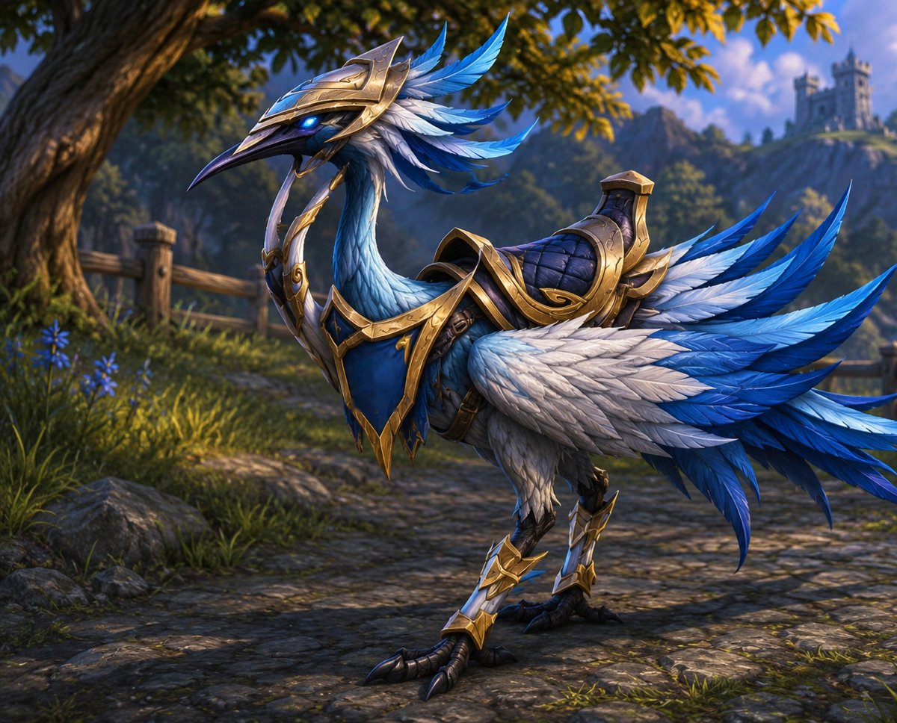
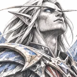
Genn Beautemps · Île de Zéphras 53.8, 81.3
Le trotteur des trombes régalien (et sa version rapide) existe aussi dans le jeu, mais on ne sait pas encore comment l'obtenir.
Les Éolides, la nouvelle race de Forever, ne montent ni chevaux ni loups : ils ont leurs propres trotteurs des trombes, de grands oiseaux coureurs. Ils s'achètent auprès de Genn Beautemps, maître des écuries et instructeur de monte sur l'île de Zéphras, leur zone de départ. Comme les Éolides peuvent rejoindre l'Alliance ou la Horde, les trotteurs servent dans les deux camps.
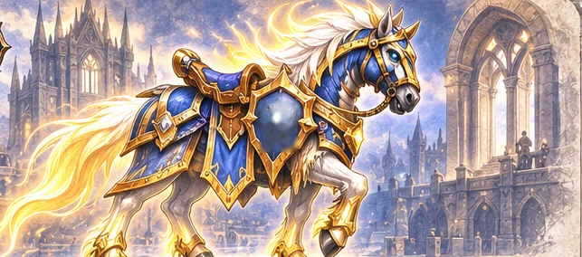
Le paladin mort-vivant, nouveau dans Forever, a sa propre monture et ses propres quêtes.
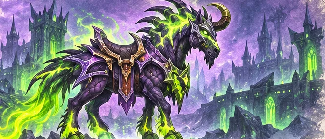
Ces montures s'invoquent comme des sorts : rien à acheter, mais la quête du niveau 60 coûte cher en composants.
Réputation commerciale : environ 6 000 points de Faveur marchande (en bêta), Exalté auprès de l'Autorité commerciale d'Azeroth (Alliance) ou du Ravitaillement et logistique de Durotar (Horde), niveau 60 et monte rapide.
Récompense du parcours Héritage (55 points d'Héritage en bêta). Liée au compte comme les autres.
Alliance seulement : Exalté auprès des Éleveurs de sabres-d'hiver (Rivern Frostwind, Berceau-de-l'Hiver, 49.9, 9.8). Une longue réputation à base de quêtes répétables.
Le jeu contient des montures inédites dont l'obtention n'est pas encore connue : Rênes de sabre-de-l'aube rayé, Kodo blanc, Kodo lavande, Cheval squelette vert, sombre, violet et noir, Cheval de guerre squelette ocre. Deux montures sont aussi liées aux éditions du jeu.
Au rang 11 du système d'honneur : Bride de palefroi de guerre noir, Rênes de tigre de guerre noir, Trotteur de bataille noir et Bélier de guerre noir côté Alliance ; Cor du loup de guerre noir, Sifflet du raptor de guerre noir, Kodo de guerre noir et Cheval de guerre squelette rouge côté Horde.
Dans la vallée d'Alterac, l'Exalté donne le Destrier de bataille foudrepique (Alliance) ou le Cor du hurleur loup-de-givre (Horde).
Noms des montures d'après les données du client de WoW Forever, via le projet Polestar (CC BY 4.0). Informations complémentaires : notre news sur les montures, le guide de JudgeHype et le guide des apparences de Wowhead. Illustrations des montures : Mygale.